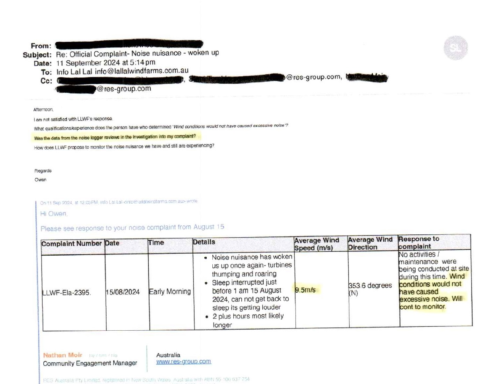
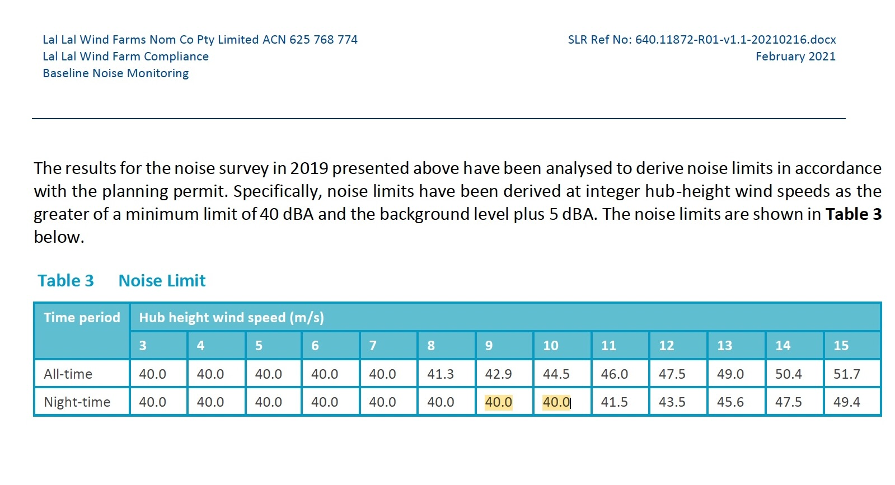

15 August 2024 — Noise Complaint and Monitoring Record
A focused documentary record of the early-morning complaint at J14aa, the contemporaneous SLR logger display, the operator's later complaint response and the K15aa night-time noise-limit framework used by SLR for the J14aa interim assessment.
What this page does — and does not do
This page places contemporaneous source material beside the relevant acoustic-report context. It does not convert a momentary logger display into a formal compliance finding. A formal assessment depends on the underlying time-synchronised monitoring data, the applicable wind-speed reference and the assessment methodology. The unresolved documentary question is narrower: was the actual SLR logger data from J14aa reviewed when the 15 August 2024 complaint was investigated, and if so, what did it show?
The SLR logger was already operating at J14aa
The Beneficiary had reported being woken in the early morning by turbine noise described in the contemporaneous complaint as “thumping and roaring”. SLR monitoring equipment was operating at the dwelling at the time.
9.5 m/s recorded in the investigation response
The later Lal Lal Wind Farm response to complaint LLWF-Ela-2395 records an average wind speed of 9.5 m/s and states: “Wind conditions would not have caused excessive noise. Will cont to monitor.”
The published response extract does not itself identify the measurement height or source of the 9.5 m/s figure. That distinction matters because the LLWF compliance framework references hub-height wind speed for the noise-limit analysis, while local wind at a receiver is separately recorded as supporting information.

Why the K15aa noise-limit table matters
SLR's March 2023 J14aa interim report records that previous baseline monitoring had not been undertaken at J14aa and that a separate J14aa noise limit had therefore not been established. SLR stated that the noise limit at the nearest receiver, K15aa, was likely appropriate for J14aa and that the J14aa interim assessment used the K15aa limits.
SLR's February 2021 K15aa baseline report derives the limits at integer hub-height wind speeds. For the night-time period, the table records a limit of 40.0 dBA at 9 m/s and 40.0 dBA at 10 m/s.

The question put to the operator
After receiving the operator's response, the Beneficiary expressly asked:
“Was the data from the noise logger reviews in the investigation into my complaint?”
On the presently published documentary record, the operator response does not identify the SLR logger data as having been reviewed, does not provide the relevant logger results and does not explain how those results informed the stated conclusion.
This does not establish that the logger data was not reviewed. It records that the presently published response does not show that it was.
What remains to be identified
The record presently contains three directly relevant pieces of information:
Contemporaneous monitoring
SLR's logger was operating at J14aa during the reported early-morning disturbance, with visible display values preserved by photograph and video.
Operator investigation
The complaint response records 9.5 m/s and concludes that wind conditions would not have caused excessive noise.
Assessment framework
SLR had used the K15aa noise limits for J14aa; the K15aa night-time limit is 40.0 dBA at both 9 m/s and 10 m/s hub-height wind speed.
The unresolved documentary question
Was the underlying SLR monitoring data from J14aa examined before the complaint response was issued?
If it was, the relevant monitored results and the way they informed the investigation have not presently been identified in the published response. If further documentary material is produced, it can be incorporated into this continuing record.
Read the underlying record
The case study should be read with the original complaint correspondence, the contemporaneous logger material, the J14aa / K15aa representative-monitoring record and the K15aa baseline documentation.